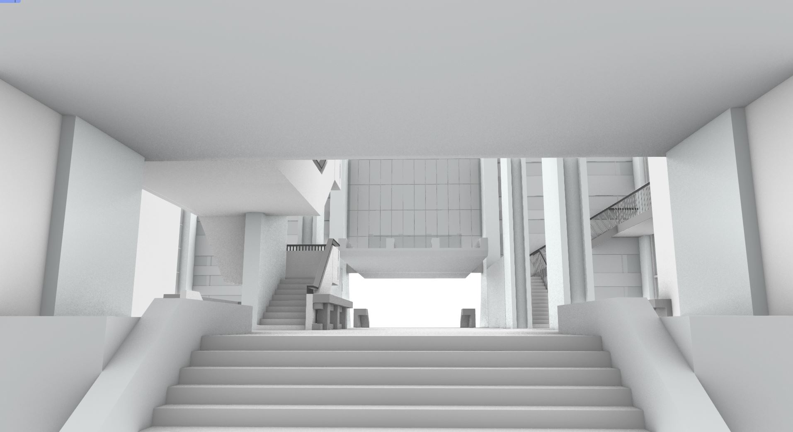

Contents From Wikipedia
Modern architecture, also called modernist architecture, was an architectural movement and style that was prominent in the 20th century, between the earlier Art Deco and later postmodern movements. Modern architecture was based upon new and innovative technologies of construction (particularly the use of glass, steel, and concrete); the principle functionalism (i.e. that form should follow function); an embrace of minimalism; and a rejection of ornament. According to Le Corbusier, the roots of the movement were to be found in the works of Eugène Viollet le duc. The movement emerged in the first half of the 20th century and became dominant after World War II until the 1980s, when it was gradually replaced as the principal style for institutional and corporate buildings by postmodern architecture.
Modern architecture emerged at the end of the 19th century from revolutions in technology, engineering, and building materials, and from a desire to break away from historical architectural styles and invent something that was purely functional and new.